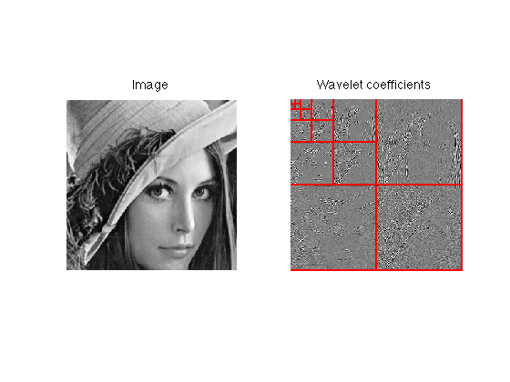
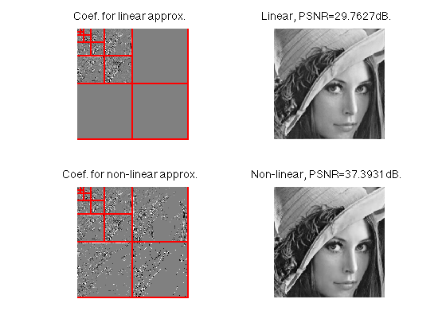
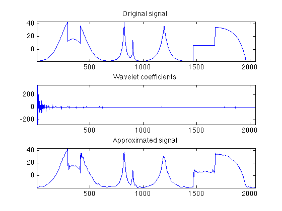
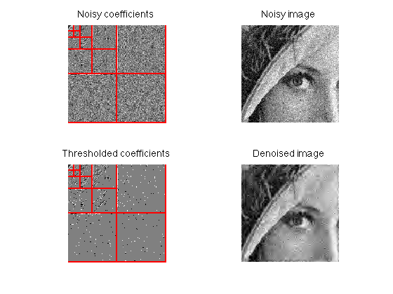
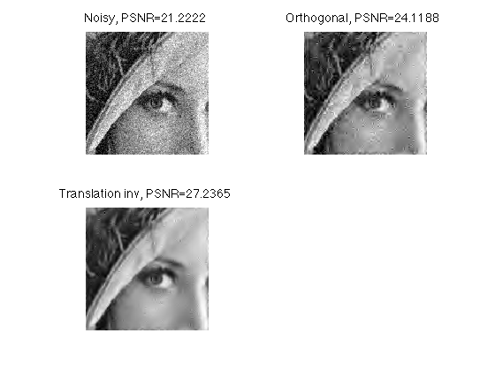
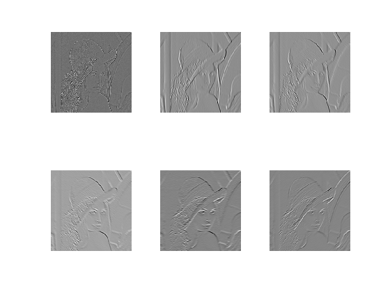
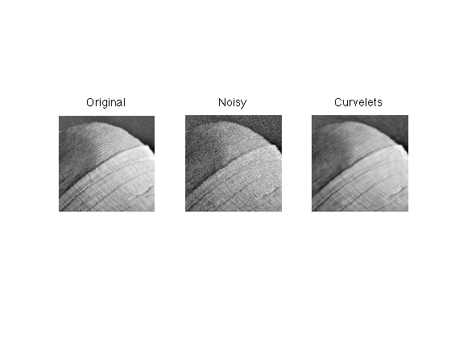
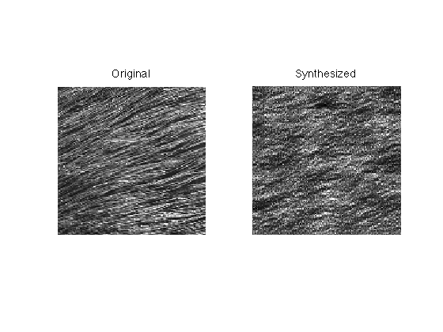
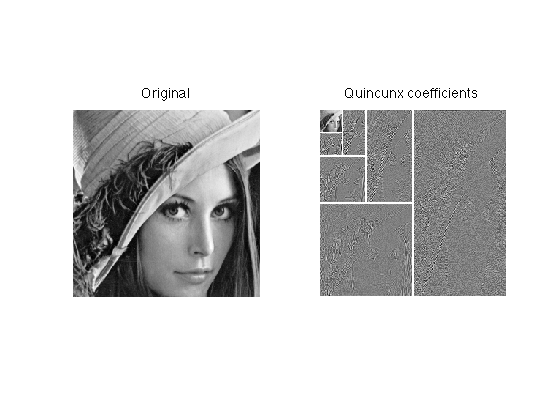
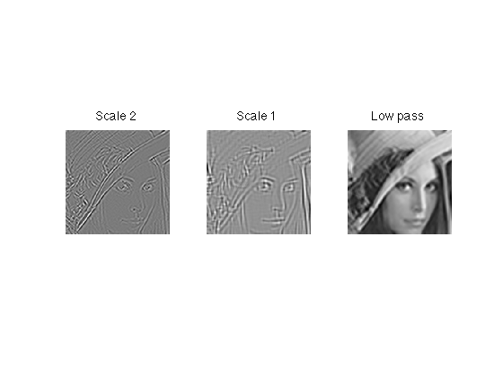

Toolox Wavelets - A Toolbox for Multiscale Signal and Image Processing
Copyright (c) 2008 Gabriel Peyre
Contents
The toolbox can be downloaded from Matlab Central http://www.mathworks.com/matlabcentral/fileexchange/loadFile.do?objectId=5104&objectType=FILE
Include in the path some additional useful scripts.
path(path, 'toolbox/');
Computing the Wavelet Transform of an Image
First we load the image
n = 256; M = load_image('lena'); % extract a sub-part of it M = rescale(crop(M,n));
Then we set up the parameter of the transform.
options.wavelet_type = 'daubechies'; % kind of wavelet options.wavelet_vm = 4; % number of vanishing moments Jmin = 3; % minimum scale
At last we actually perform the transform.
MW = perform_wavelet_transform(M, Jmin, +1, options);
If we do the inverse transform, we get back nearly the original image.
M1 = perform_wavelet_transform(MW, Jmin, -1, options); disp(['Error of recovery (should be close to 0): ' num2str(norm(M-M1, 'fro')/norm(M, 'fro')) '.']);
Error of recovery (should be close to 0): 8.523e-12.
Finaly we display the image and its transform.
subplot(1,2,1); imageplot(M); title('Image'); subplot(1,2,2); plot_wavelet(MW,Jmin); title('Wavelet coefficients');
Linear and Non-linear Approximation with Wavelets
Linear approximation is obtained by keeping M low frequency coefficients and then applying the inverse wavelet transform. Here we take M=n^2/4 by keeping n/2 x n/2 low frequency coefficients.
% MWl contains only the low frequency coefficients of MW MWlin = zeros(n); MWlin(1:end/2,1:end/2) = MW(1:end/2,1:end/2); % backward wavelet transform Mlin = perform_wavelet_transform(MWlin, Jmin, -1, options);
Linear approximation is obtained by keeping M=n^2/4 best coefficients, that are the M largest amplitude coefficients.
% MWl contains only the low frequency coefficients of MW MWnlin = keep_biggest(MW,n^2/4); % backward wavelet transform Mnlin = perform_wavelet_transform(MWnlin, Jmin, -1, options);
We can now compute the approximation error and display both the coefficients and the resulting images. The non-linear approximation is usually much better for images that contains edges because linear approximation blurs features (it is non-adaptive).
% compute the PSNR error: the larger, the better plin = psnr(M,Mlin); pnlin = psnr(M,Mnlin); clf; subplot(2,2,1); plot_wavelet(MWlin,Jmin); title('Coef. for linear approx.'); subplot(2,2,2); imageplot(Mlin, ['Linear, PSNR=' num2str(plin) 'dB.']); subplot(2,2,3); plot_wavelet(MWnlin,Jmin); title('Coef. for non-linear approx.'); subplot(2,2,4); imageplot(Mnlin, ['Non-linear, PSNR=' num2str(pnlin) 'dB.']);
Signal Processing with Wavelets
You can do the same thing with 1D signals.
% load signal n = 2048; f = load_signal('Piece-Regular',n); % compute transform fw = perform_wavelet_transform(f,Jmin,+1,options); % keed only small fraction of coefficients fw1 = keep_biggest(fw,round(n/30)); % compute inverse transform f1 = perform_wavelet_transform(fw1,Jmin,-1,options); % display clf; subplot(3,1,1); plot(f); axis tight; title('Original signal'); subplot(3,1,2); plot(fw); axis tight; title('Wavelet coefficients'); subplot(3,1,3); plot(f1); axis tight; title('Approximated signal');
Image Denoising with Wavelets
We first load an image, and add some noise to it.
n = 128; M0 = load_image('lena'); % we rescale in [.05,.95] to avoid saturation because of the noise M0 = rescale(crop(M0,n), .05,.95); sigma = .1; M = M0 + randn(n)*sigma;
Orthogonal denoising is performed by removing small amplitude coefficients, which are likely to be noise. This is thus very similar to non linear approximation. Denosing is approximation.
% the threshold should be about the noise level T = 2.5*sigma; % do the forward transform MW = perform_wavelet_transform(M, Jmin, +1, options); % remove small amplitude coefficients, that corresponds to noise MWT = perform_thresholding(MW,T); % inverse transform Mortho = perform_wavelet_transform(MWT, Jmin, -1, options); % display clf; subplot(2,2,1); plot_wavelet(MW,Jmin); title('Noisy coefficients'); subplot(2,2,2); imageplot(clamp(M), 'Noisy image'); subplot(2,2,3); plot_wavelet(MWT,Jmin); title('Thresholded coefficients'); subplot(2,2,4); imageplot(clamp(Mortho), 'Denoised image');
The orthogonal wavelet transform is not very efficient for image denoising because it lacks translation invariance. This is why there are reconstruction artifacts in the previous denoising experiments. Translation invariant wavelet transform reduces these effect by increasing the redundancy of the wavelet transform. It thus requires more time to perform the denoising.
options.ti = 1; MWti = perform_wavelet_transform(M, Jmin, +1, options); T = 3*sigma; % translation invariance usually requires a lower threshold MWTti = perform_thresholding(MWti,T); Mti = perform_wavelet_transform(MWTti, Jmin, -1, options); options.ti = 0; % compute error pnoisy = psnr(M0,M); portho = psnr(M0,Mortho,1); pti = psnr(M0,Mti,1); % display clf; imageplot({clamp(M) clamp(Mortho) clamp(Mti)},{['Noisy, PSNR=' num2str(pnoisy)]... ['Orthogonal, PSNR=' num2str(portho)] ['Translation inv, PSNR=' num2str(pti)]},2,2);
Steerable Pyramid
The toolbox contains a simple wrapper to the code of Eero Simoncelli that can be downloaded from
http://www.cns.nyu.edu/~eero/STEERPYR/
The steerable transform is an oriented wavelet transform. It allows to analyse an image along several orientations.
M = load_image('lena', 256); Jmin = 4; options.nb_orientations = 6; MS = perform_steerable_transform(M, Jmin,options); clf; imageplot({MS{1:6}}, '', 2,3);
Curvelet Transform
The toolbox contrains a simple wrapper to the curvelet code that can be downloaded from
The curvelet transform is very well suited to denoising image that contains oriented texture, and cartoon edges. Try to get a better result on the hat of Lena with wavelets !
M0 = load_image('lena'); M0 = rescale(crop(M0,128,[100 240]),.05,.95); sigma = .06; M = M0 + randn(n)*sigma; % some options for the curvelet transform options.nbscales = log2(size(M,1))-2; options.n = n; % the threshold is tricky to set because of the redundancy of the transform T = 3/4*sigma; % transform / threshold / inverse C = perform_curvelet_transform(M,options); CT = perform_thresholding(C,T); MC = perform_curvelet_transform(CT,options); % display imageplot({M0 M MC}, {'Original' 'Noisy' 'Curvelets'});
Multiscale Texture Synthesis
The Heeger and Bergen SIGGRAPH'95 synthesis algorihtm computes a new texture by matching the histograms of a steerable transform (starting from an initial random noise). It works well for cloud-like texture, and fail to synthesize geometric features.
% load the image name = 'hair'; M = load_image(name, n); % parameters for the synthesis options.niter_synthesis = 5; options.verb = 0; options.synthesis_method = 'steerable'; % do the synthesis from random noise M1 = randn(size(M)); M1 = perform_wavelet_matching(M1,M,options); % display clf; imageplot({M M1}, {'Original' 'Synthesized'});
Quincunx wavelet transforms
Quincunx wavelets are non-separable transforms that allow to avoid using vertical/horizontal wavelets. The scaling grows like 2^{j/2} with the scale j instead of 2^j, which can be advantageous.
Biorthogonal quincunx wavelets are implemented using a simple wrapper to the code of Dimitri Van De Ville.
n = 256; M = load_image('lena'); M = rescale(crop(M,n)); Jmin = 5; [MW,options.quincunx_filters] = perform_quincunx_wavelet_transform(M,Jmin,+1); % display options.gamma = .75; clf; subplot(1,2,1); imageplot(M,'Original'); subplot(1,2,2); MW1 = plot_quincunx_wavelet(MW, Jmin, options); title('Quincunx coefficients');
Redundant, translation invariant transform are implemented with the lifting scheme.
% options for the transform options.bound = 'sym'; options.primal_vm = 6; options.dual_vm = 6; Jmin = log2(n)-3; MW = perform_quicunx_wavelet_transform_ti(M,Jmin,options); clf; imageplot({MW(:,:,end-2) MW(:,:,end-1) MW(:,:,end)},{'Scale 2' 'Scale 1' 'Low pass'});
Other features
This toolbox implements many other features, that can be tested by running the scripts in tests/. This includes
- Many wavelet filters
- Segmentation with Gabor features
- BLS-GSM denoising (wrapper to the code of Portilla and Simoncelli)
- Implementation of wavelet transform (7/9 and 5/3) with lifting.
- Isotropic laplacian pyramid transform.
- Interface to JPEG-20000 wavelet coder.
- Interface (simple wrapper) to dual tree wavelet transform.